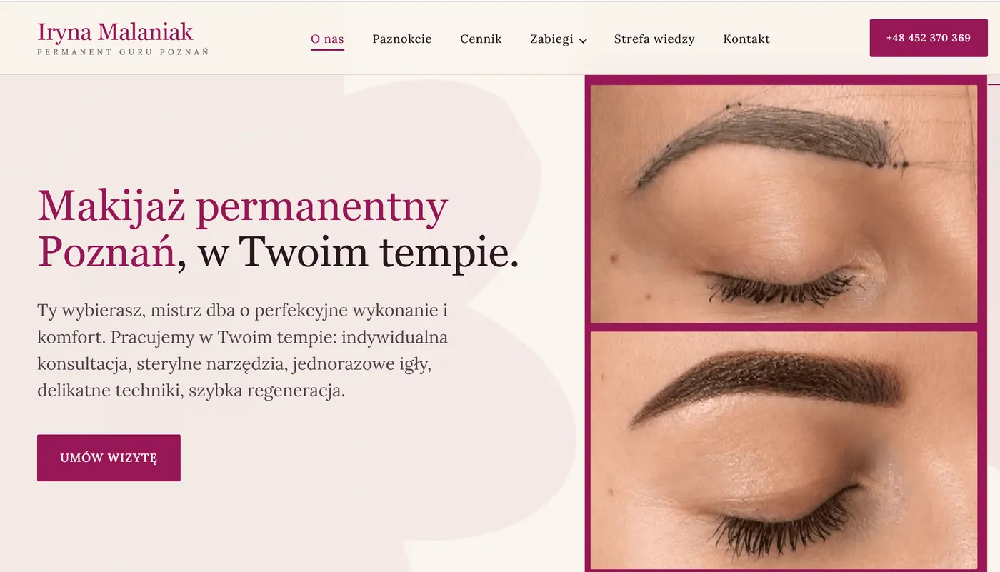

Permanent Guru: a permanent makeup SEO case study from Poznań
Permanent Guru is a one-specialist permanent makeup studio in central Poznań, competing with salons that buy ads. I rebuilt its website as six separate answers to six separate searches. Local SEO, the Google Business Profile and review requests now run as one system.
Last updated: · By Alena Porokh

| Client | Permanent Guru, Iryna Malaniak |
|---|---|
| Industry | Permanent makeup & nails |
| Location | Poznań, Poland |
| Language | Polish, written for how Poznań searches |
| What I did | Website and treatment architecture, local SEO, Google Business Profile, review workflow, Knowledge Zone (FAQ content), content and social calendar |
| Status | 6 of 8 growth layers live; analytics in progress, AI search next |
| Live site | permanentguru.com (opens in a new tab) |
| Booking | Booksy, plus a contact form and free consultation |
In short: one page per treatment, built around the search that leads to it and the doubts that come with it. Trust questions from Instagram DMs now live on the site. The website, profile and review requests feed each other.
What was the problem?
Permanent makeup is a high-consideration purchase, and the studio had nothing on its site for the weeks of research before a booking. Clients compare healed results and arrive with a list of fears. A single price list could not answer them.
Someone is letting a stranger put pigment into their face, and it stays for a year or more. Nobody books that on impulse.
The studio already had the harder half: the skill, the sterile setup and the healed work. What it lacked was a way to be found by someone typing makijaż permanentny brwi Poznań late at night. It also lacked answers to the questions people were about to send by Instagram DM instead.
A price list tells you what something costs. It does not tell you whether the treatment is right for you.
What I built
I built a website with one page per treatment, a local SEO foundation, a maintained Google Business Profile, a review workflow and an FAQ hub. Each part was designed to feed the next.
- Website and treatment architecture. A page per treatment, structured around search intent rather than the studio's internal categories.
- Local SEO foundation. Technical setup, on-page work and the Poznań signals that decide whether a studio appears in the map pack.
- Google Business Profile. Categories, services, photos and posts maintained as part of the system, not as an afterthought.
- Review workflow. Requests sent at the right moment in the treatment cycle, so reviews arrive steadily instead of in bursts.
- Knowledge Zone. FAQ and education content that builds trust and covers long-tail searches at the same time.
- Content and social calendar. Healed results, technique explainers and studio posts on a rhythm the studio can sustain.
Why a separate page for every treatment?
A single treatment menu page can rank for only one thing and answers nobody's specific question well. Separate pages let each treatment match its own search and carry its own reassurance.
Each treatment was treated as a separate market:
- Brows. Microblading, powder brows and the combination technique are separated, because people search for them by name and already know which one they want.
- Lips. The real question is about swelling, color settling, and how lips look in week one versus week four.
- Eyeliner. The treatment with the most fear attached, so its page carries the most reassurance.
- Removal. A rescue search, usually urgent and usually after someone else's work. Entirely different intent, entirely different page.
- Lamination. Brow and lash lamination, the lower-commitment entry point that brings new clients in for the first time.
- Reconstruction after alopecia. A medical-adjacent need, searched in completely different words. A shared page would have failed it.
The nail services (manicure, pedicure, extensions and nail art) sit on their own track. They serve a repeat-visit rhythm rather than a once-a-year decision.
Why put trust questions on the page?
Questions answered on the page remove doubt before the booking and rank for the long-tail searches first-timers type. Both jobs are done by the same content.
The questions that arrived as DMs were promoted to the site: Does it hurt? How long does it last? What does the healing week look like? What happens if the color goes wrong? Who holds the needle, and what are they qualified in?
That became the Knowledge Zone, the section that serves the research phase instead of pretending it does not happen.
Why booking stays on Booksy
Booksy is where this market already has an account and a payment method. A custom booking flow would have cost conversions just to prove a point.
The site routes to Booksy. It keeps the contact form and a free consultation for people who want to ask something first.
Which growth layers are live?
Six of the eight layers are running. The order matters more than the count, because each layer makes the next one cheaper.
What are the results so far?
Traffic and booking numbers will be published once GA4 and Search Console can back them.
Also observable without a dashboard: the studio now has a page to send someone to for every question that used to be answered by hand. Reviews arrive on a rhythm instead of whenever someone remembers to ask.
To be published with date ranges: organic traffic, ranked queries, map pack impressions and booking clicks.
What the client said
"Working with Alena helped me explain what Permanent Guru actually does, and what makes each treatment different. She took the time to understand how I work, and turned that into content that sounds like me rather than like an advert. What I value most is her eye for detail, and how much care she put into getting my voice right."
What comes next?
Analytics and attribution come first, so every claim on this page gets a number behind it. After that comes AI search optimization, because assistants increasingly answer these trust questions before anyone reaches a website.
The Knowledge Zone already contains most of the raw material for that step.
Services used in this project
- Local SEO for service businesses: map pack visibility, location signals and treatment pages.
- Google Business Profile optimization: categories, services, photos, posts and a review process.
- Web design for service businesses: one page per service, built around search demand.
Want the same system for your studio?
Tell me which treatments bring in the money and where you want to be found. I will tell you which layer is missing.